Toolkit Panel
Everything lives in the Toolkit tab of the 3D Viewport sidebar (N).
Toolkit Panel
All tools in one sidebar tab.

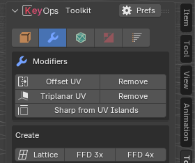
More info
N › Toolkit
Shift-click icons to show several sections. Prefs opens the add-on preferences.
Toggle in preferences: Object Toolkit
Object Toolkit
Everyday object operations.
More info
Object Mode
| Button | What it does | Key |
|---|---|---|
| Combine / Separate | Join keeping normals and UVs / split by loose parts or material | |
| Apply Modifiers | Apply heavy stacks fast. Keep a backup. | Alt C |
| Freeze Scale | Apply scale and adjust modifiers to match | |
| Snap to Floor | Snap to Floor | Alt 3 |
| Fast Mirror | Fast Mirror | Alt X |
| Parent Used Objects | Parent boolean cutters and other modifier objects to the selection | |
| Duplicate Linked | Linked mesh, or shared modifier stack | Shift Alt D |
| Boolean | Booleans | Ctrl Numpad |
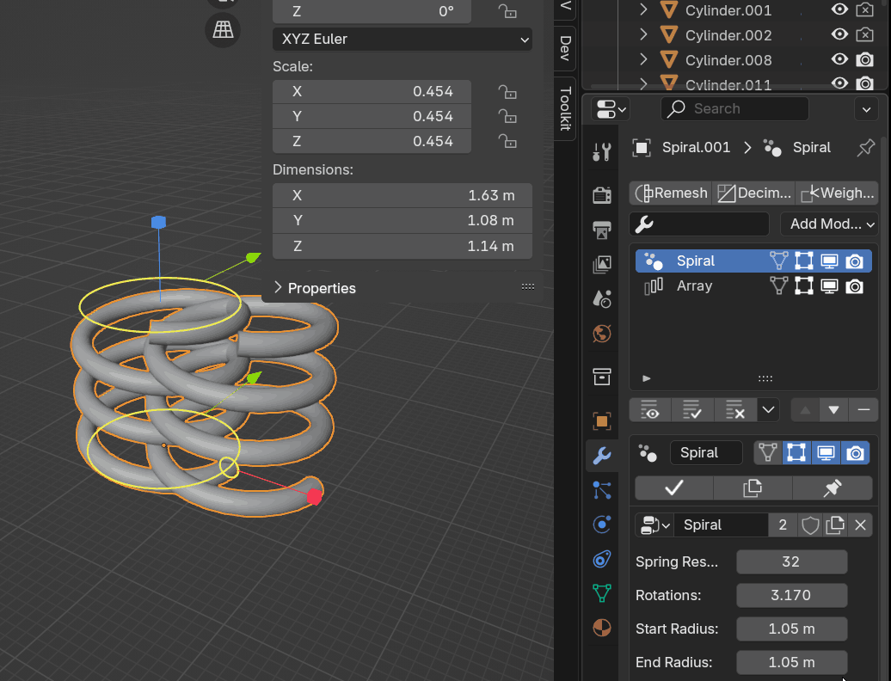
Edit Toolkit
Edit tools that follow the selection mode.
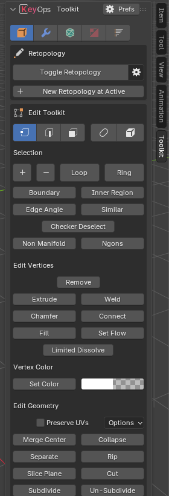
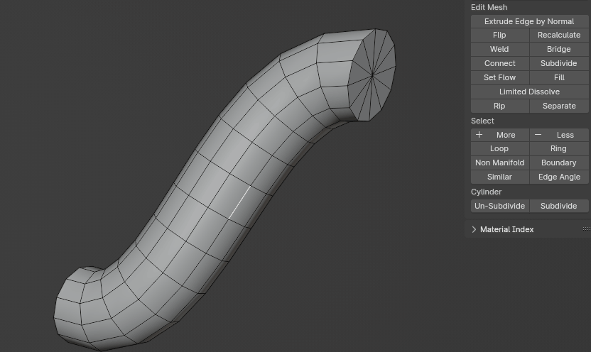
More info
Edit Mode
- Cylinder: from Edge, Subdivide and Un-Subdivide (keeps UVs).
- Set Flow: built in, based on EdgeFlow.
- Make Planar / Circle / Relax appear with LoopTools on 5.0+.
- The Extrude menu gets Offset Extrude Edge.
CAD Decimate
Decimate huge scenes without crashing.
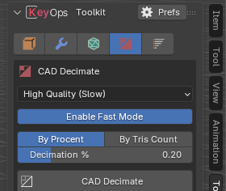
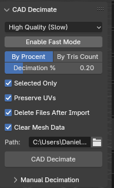
More info
Toolkit › CAD Decimate
- High: Decimate modifier, best result, by % or target tris.
- Medium / Low: weld-based, much faster, no UVs.
- Fast Mode: faster but uses more memory.
Works best with many separate objects.
Toggle in preferences: CAD Decimate
Auto LOD
LODs in one click.
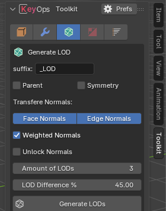
More info
Toolkit › LOD
Amount, % reduction per LOD, suffix, parenting, X symmetry, normal transfer and weighted normals.
Toggle in preferences: Auto LOD
Polycount List
Live triangle count per object.
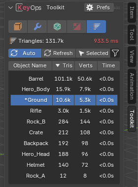
More info
Toolkit › Polycount
Also in Scene Properties. Turn off Auto Update for very large scenes.
Toggle in preferences: Polycount List
Quick Bake Name
Name high / low pairs for baking.
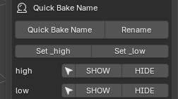
More info
Toolkit › Object
Two objects: the denser one gets _high, the other _low. More objects: the active one is _low. Each group gets select, show and hide buttons.
Toggle in preferences: Quick Bake Name
Quick Export
Ctrl EExport the selection in one key.
More info
If the active collection is named high or low, it goes into a Bake folder as _high / _low. OBJ by default. Save the .blend first.
Toggle in preferences: Quick Export
Material Utils
Alt MQuick material list.
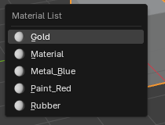
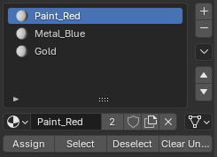
More info
Also adds Remove All Object Materials to Object › Clean Up. Compact list or big preview icons in the settings.
Toggle in preferences: Material Utils